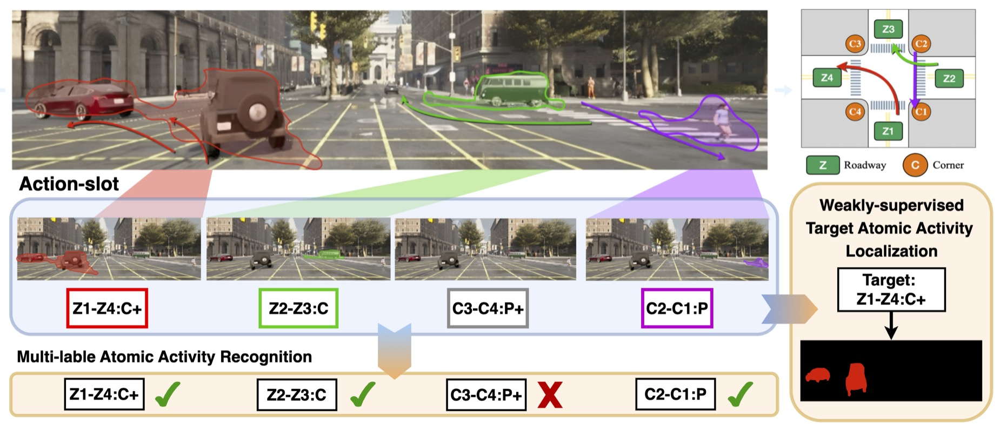
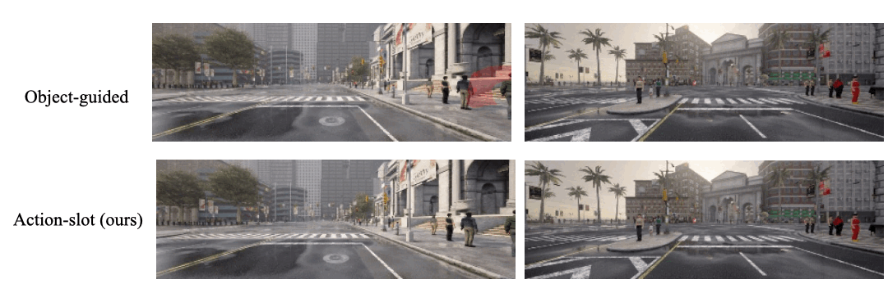
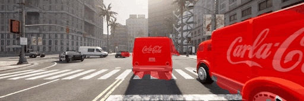
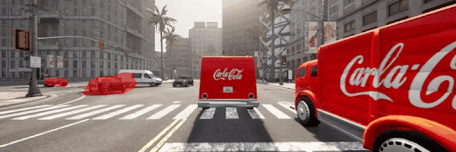
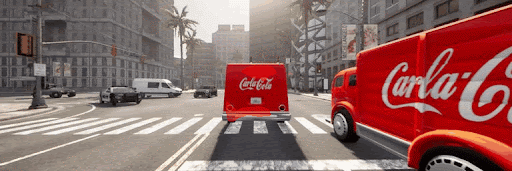

In this paper, we study atomic activity understanding, in traffic scenes. Holistically understanding the atomic activity in traffic scenes requires capturing multiple road users’ motions and their contextual information. Drawing inspiration from the recent success of slot attention in unsupervised object discovery by decomposing visual input into individual slots, we propose Action-slot, a slot attention–based framework that learns action-centric visual representations for traffic scene videos. The key idea is to design action slots that selectively attend to regions where atomic activities occur, without requiring explicit object-level guidance. We further introduce a background slot that competes with action slots, encouraging the model to disregard irrelevant background regions. We supervise Action-slot on multi-label atomic activity recognition and propose an attention-guided pseudo mask refinement framework for weakly-supervised localization. The framework leverages Action-slot’s attention maps, using attention differences before and after inpainting the initial pseudo mask area to highlight target regions and reduce false-positive regions from coarse, diffuse attention. To comprehensively evaluate Action-slot, we construct the Traffic Activity Recognition (TACO) dataset, which addresses the class imbalance of OATS inherent from the real-world distribution and further augments it with pixel-level annotations to evaluate localization. Experimental results demonstrate that Action-slot significantly outperforms various recognition models across multiple datasets, and further provide strong guidance for generating pseudo masks for localization combined with our refinement framework, leading to superior performance compared with existing weakly-supervised localization baselines.

Illustration of the proposed Action-slot. In the scene, three atomic activities are presented and depicted by colored arrows. For example, the red arrow is the Z1-Z4: C+ atomic activity, indicating a group of vehicles turning left. We introduce Action-slot that decomposes multiple atomic activities in videos into individual slots. We demonstrate that Action-slot can effectively recognize multiple atomic activities and provide guidance for localizing target activities in complex traffic scenes, given only video-level atomic activity labels.
We compare object instance mask guidance with Action-slot that is guided with \(L_{bg}\) and \(L_{neg}\) mentioned in Sec. 4.3. . We hpothesize that the object guidance can mislead the model because not all road users are involved in an activity. To verify it, we first create scenarios where presents many static pedestrians. Note that there is no atomic activity presented in the scenarios. Then we visualize the attention from the any slot that predicts false positive. The object-guided model is confused by the static road users and makes false positive predictions. While our Action-slot shows strong robustness in the scenarios




@article{yourlastname2026paper,
title={Action-slot: Egocentric Action-centric
Representations for Atomic Activity
Understanding in Traffic Scenes},
author={Lastname, Firstname and Mentor, Name},
journal={IEEE Transactions on Pattern Analysis and Machine Intelligence},
year={2026}
}